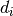
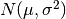

Bases: chompy.chompyPcomplex.PolytopalComplex
The data type to represent a grid of (hyper)cuboids. Efficient generation of every subset of d-dimensional faces.
To compute the boundary of a cuboidal d-complex.
Return the closed (polytopal) boundary (d-1)-complex .
To compute d adjacency matrices that implement the boundary maps.
Return a list of sparse matrices in CSR (Compressed Sparse Row) format.
To make a copy of a cellComplex object.
To transform a PolytopalComplex into a Hierarchical Polyhedral Complex (HPC).
Return an object of Hpc class.
To build the cell database of a cell complex.
Return a list of d+1 dictionaries, where d is the dimension of the complex. Key is the ‘repr’ of the cells; values are integers in range(0,k[d]) where k[d] is the cardinality of the d-skeleton.
To the “UKPOL” of a simplicial d-complex.
Return a tuple verts, cells[d].
To give Plasm a PolytopalComplex to visualize.
Return ‘None’.
To write a ‘.psm’ output file, with plasm syntax.
Return ‘None’.
index(shape)(offset) is the inverse of offset(shape)(index). To convert an integer offset to a multidimensional array index.
Bases: chompy.chompyPcomplex.PolytopalComplex
To compute the boundary of a polytopal d-complex.
Return the closed (polytopal) boundary (d-1)-complex .
To compute d adjacency matrices that implement the boundary maps. Return a list of sparse matrices in CSR (Compressed Sparse Row) format.
To make a copy of a cellComplex object.
To transform a PolytopalComplex into a Hierarchical Polyhedral Complex (HPC).
Return an object of Hpc class.
To the “UKPOL” of a simplicial d-complex.
Return a tuple verts, cells[d].
To give Plasm a PolytopalComplex to visualize.
Return ‘None’.
To write a ‘.psm’ output file, with plasm syntax.
Return ‘None’.
Bases: chompy.chompyPointSet.PointSet
The data type to represent a set of points, supporting a cell complex.
L.append(object) – append object to end
To make a copy of a PointSet object.
L.extend(iterable) – extend list by appending elements from the iterable
Raises ValueError if the value is not present.
To add a point (if not already present) to a PointSet object.
Raises IndexError if list is empty or index is out of range.
L.remove(value) – remove first occurrence of value. Raises ValueError if the value is not present.
L.reverse() – reverse IN PLACE
L.sort(cmp=None, key=None, reverse=False) – stable sort IN PLACE; cmp(x, y) -> -1, 0, 1
To update a PointSet object without change the element ordering.
Bases: chompy.chompyPcomplex.PolytopalComplex
Input: a hierarchical polyhedral complex (HPC data structure)
To compute the boundary of a polytopal d-complex.
Return the closed (polytopal) boundary (d-1)-complex .
To compute d adjacency matrices that implement the boundary maps. Return a list of sparse matrices in CSR (Compressed Sparse Row) format.
To make a copy of a cellComplex object.
To transform a PolytopalComplex into a Hierarchical Polyhedral Complex (HPC).
Return an object of Hpc class.
To the “UKPOL” of a simplicial d-complex.
Return a tuple verts, cells[d].
To give Plasm a PolytopalComplex to visualize.
Return ‘None’.
To write a ‘.psm’ output file, with plasm syntax.
Return ‘None’.
Module for boundary integration of polynomials over three-dimensional simplicial domains.
Look for method documentation in: C, Cattani and A. Paoluzzi: Boundary integration over linear polyhedra. Computer-Aided Design 22(2): 130-135 (1990) (doi:10.1016/0010-4485(90)90007-Y
To compute a binomial number. Efficient linear recursion implemented.
Return an integer number.
Transforms the 2-skeleton of a simplicial complex in a triangulated surface.
Return a list of triples of surface vertices (nD points).
Random values in a given shape.
Create an array of the given shape and propagate it with random samples from a uniform distribution over [0, 1).
random
This is a convenience function. If you want an interface that takes a shape-tuple as the first argument, refer to random.
>>> np.random.rand(3,2)
array([[ 0.14022471, 0.96360618], #random
[ 0.37601032, 0.25528411], #random
[ 0.49313049, 0.94909878]]) #random
Return a sample (or samples) from the “standard normal” distribution.
If positive, int_like or int-convertible arguments are provided, randn generates an array of shape (d1, ..., dn), filled with random floats sampled from a univariate “normal” (Gaussian) distribution of mean 0 and variance 1 (if any of the  are floats, they are first converted to integers by truncation). A single float randomly sampled from the distribution is returned if no argument is provided.
This is a convenience function. If you want an interface that takes a tuple as the first argument, use numpy.random.standard_normal instead.
random.standard_normal : Similar, but takes a tuple as its argument.
For random samples from , use:
sigma * np.random.randn(...) + mu
>>> np.random.randn()
2.1923875335537315 #random
Two-by-four array of samples from N(3, 6.25):
>>> 2.5 * np.random.randn(2, 4) + 3
array([[-4.49401501, 4.00950034, -1.81814867, 7.29718677], #random
[ 0.39924804, 4.68456316, 4.99394529, 4.84057254]]) #random
Bases: object
The data type to represent a bounded convex set, supporting a cell complex of polytopal boundary faces.
To compute the boundary of a polytopal d-complex.
Return the closed (polytopal) boundary (d-1)-complex .
To compute d adjacency matrices that implement the boundary maps. Return a list of sparse matrices in CSR (Compressed Sparse Row) format.
Bases: list
The data type to represent a set of points, supporting a cell complex.
L.append(object) – append object to end
L.extend(iterable) – extend list by appending elements from the iterable
Raises ValueError if the value is not present.
Raises IndexError if list is empty or index is out of range.
L.remove(value) – remove first occurrence of value. Raises ValueError if the value is not present.
L.reverse() – reverse IN PLACE
L.sort(cmp=None, key=None, reverse=False) – stable sort IN PLACE; cmp(x, y) -> -1, 0, 1
Transforms the 2-skeleton of a simplicial complex in a triangulated surface.
Return a list of triples of surface vertices (nD points).
To complute the multiple linear extrusion of a d-complex. Map R^d -> R^(d+1), according to: Ferrucci & Paoluzzi, CAD 1991. ‘cells’ is a simplicial complex, given as a list of lists; ‘hlist’ is a list of heights in the added dimension.
Return the (d+1)-dimensional simplicial complex. Only the 0- and (d+1)- skeletons are computed. In order to get the remaining skeletons, the ‘cell-complex’ function must be invoked.
To Apply the “mappping” to the vertices of the SimplicialComplex pol.
Be careful to write “Map”, with the first letter in Upper case. Return a new SimplicialComplex.
Bases: chompy.chompyPcomplex.PolytopalComplex
The data type to represent a simplicial complex.
The SimplicialComplex is a dimension-independent ADT (Abstract Data Type), characterized by an intrinsic and an embedding dimension, a set of vertices, and sets of cells (of various dimensions), given as lists of vertex indices.
The constructor returns an object of the class.
To compute surface integrals of a three-variate monomial on the complex boundary.
Return a number.
To compute volume integrals of a three-variate monomial on the complex boundary.
Return a number.
To compute the addition of d-cells of ‘scomplex’ to self. ‘scomplex’ must be a subcomplex of self.
Return a new subcomplex of self.
To compute the boundary of a simplicial d-complex.
Return the closed (d-1)-complex triangulating the boundary of the input complex.
To compute d adjacency matrices that implement the boundary maps. Return a list of sparse matrices in CSR (Compressed Sparse Row) format.
To make a copy of a cellComplex object.
To complute the multiple linear extrusion of a d-complex. Map R^d -> R^(d+1), according to: Ferrucci & Paoluzzi, CAD 1991. ‘cells’ is a simplicial complex, given as a list of lists; ‘hlist’ is a list of heights in the added dimension.
Return the (d+1)-dimensional simplicial complex. Only the 0- and (d+1)- skeletons are computed. In order to get the remaining skeletons, the ‘cell-complex’ function must be invoked.
To transform a PolytopalComplex into a Hierarchical Polyhedral Complex (HPC).
Return an object of Hpc class.
To compute a multiresolution cellcomplex generated by embedding the C2 cellcomplex within self. C2 must be a SUBCOMPLEX of self.
Return a new SimplicialComplex.
To map the SimplicialComplex so that its containment box is mapped to the standard unit cube.
Return a new subcomplex of self.
To compute a subcomplex of self, with d-cells incident on some 0-cell in the list of face lists ‘germs’.
Return a new cellComplex with the 0-cells of self and a subset of d-cells.
To rotate the SimplicialComplex by the ‘angle’ as side effect. The changed coords are ‘axis1’, ‘axis2’
Return self.
To compute the baricentric decomposition of a d-dimensional obj SimplicialComplex.
Return a simplicial SimplicialComplex object with k_d * (d+1)! d-cells, where k_d is the cardinality of the d-skeleton of obj.
To compute the subtraction of d-cells of ‘scomplex’ from self. ‘scomplex’ must be a subcomplex of self.
Return a new subcomplex of self.
To translate the SimplicialComplex by the vect as side effect.
Return self.
To compute the baricentric decomposition of a d-dimensional obj SimplicialComplex.
Return a simplicial SimplicialComplex object with k_d * (d+1)! d-cells, where k_d is the cardinality of the d-skeleton of obj.
To the “UKPOL” of a simplicial d-complex.
Return a tuple verts, cells[d].
To give Plasm a PolytopalComplex to visualize.
Return ‘None’.
To write a ‘.psm’ output file, with plasm syntax.
Return ‘None’.
To compute d adjacency matrices that implement the boundary maps.
Return a list of sparse matrices in CSR (Compressed Sparse Row) format.
To read a ‘.dat’ input file, with CSV syntax. Each cell is read from a single line.
Return the complex as a list of lists ‘cells’ of simplices.
To generate a grid of d-simplices.
Return the complex as a ‘cells’ list of lists of simplices.
To compute and store all the skeletons of a cell complex. The input data structure is only required to contain the 0- and the highest dimensional skeletons (0- and n-, with dim == n)
Return the (possibly upgraded) list of lists of k-dimensional cells, with 0 <= k <= dim.
To generate a string representation of a number array.
Used to generate the vertex keys in PointSet dictionary, and other similar operations.
To compute the (intrinsic) dimension of a cell complex.
Return the last non zero cardinality of k-skeletons, with k <= dim.
Simple tool to evaluate a language expression passed as a string.
Side effect: print the string and its value. Return None.
To compute the (non oriented) boundary of a d-simplex. Uses the standard method of algebraic topology: elimination of a vertex index to generate every face. Both the simplex and its facets are represented as an ordered list of vertices.
Return a list of facets, i.e. of (d-1)-dimensional simplexes.
Compute the homology map of a (simplicial) cell complex. The map is given as d+1 lists (4 lists in this prototype implementation) [b_0, b_1, b_2, b_3] corresponding to the boundary operators
b_d: K_d -> K_(d-1). Notice that b_0 == [] by definition. Each map is given as an (ordered) list of pairs.
Return a list of lists of pairs (tuples) of positive integer indices. The first element is the index of a d-cell; the second element is the index of an incident (d-1)-facet.
To build the cell database of a cell complex.
Return a list of d+1 dictionaries, where d is the dimension of the complex. Key is the ‘repr’ of the cells; values are integers in range(0,k[d]) where k[d] is the cardinality of the d-skeleton.
To make an ‘internal printing’ of a (possibly nested) list in plasm format.
Return a string, with squaare brackets substituted by angle brackets
To compute the coordinates associated to a list of (Num) differences. Starting from zero.
Return a list of Num
To remove the duplicates from a list of cells. Consider as duplicate the cell with opposite orientation (using the canonical representation) The mapping on a dictionary is used, with key the repr of the elements.
Returns a new list without duplicates.
Decision procedure to approximate a small number to zero.
Return either the input number or zero.
sphinx-autopackage-script
This script parses a directory tree looking for python modules and packages and creates ReST files appropriately to create code documentation with Sphinx. It also creates a modules index (named modules.<suffix>).
Build the text of the file and write the file.
Create the module’s index.
Build the text of the file and write the file.
Create the automodule directive and add the options.
Create a heading of <level> [1, 2 or 3 supported].
Check if the directory is in the exclude list.
Normalize the excluded directory list: * must be either an absolute path or start with rootpath, * otherwise it is joined with rootpath * with trailing slash